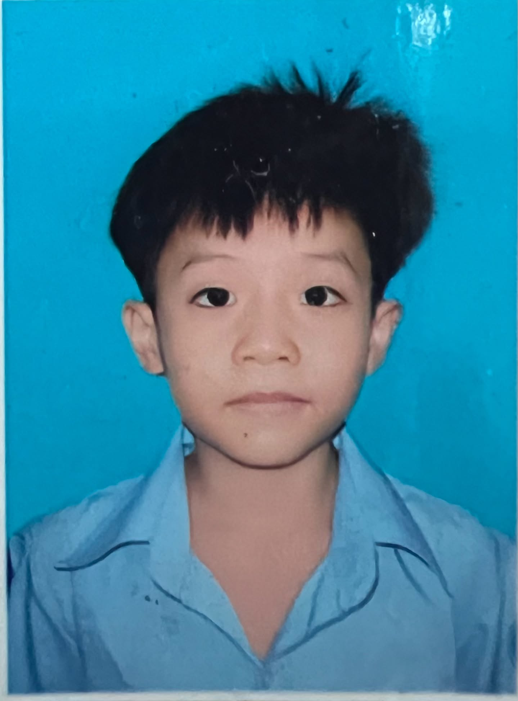

Where it
started
I can’t remember exactly when my love for art began. Perhaps it was never something I consciously chose.
As a child, I simply loved drawing. I would ask adults to draw something for me, then spend hours trying to recreate it. I taught myself through YouTube tutorials, drawing anime characters again and again.
Even when playing with Lego, I rarely followed the instructions. I preferred building things that existed only in my imagination. Back then, creativity wasn’t something I understood. It was simply something I enjoyed.
As a child